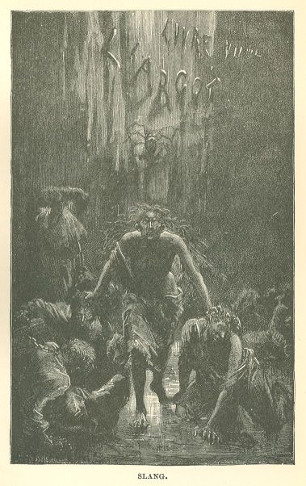

Les Misérables
CHAPTER III—THE VICISSITUDES OF FLIGHT
This is what had taken place that same night at the La Force:—
An escape had been planned between Babet, Brujon, Guelemer, and Thenardier, although
Thenardier was in close confinement. Babet had arranged the matter for his own benefit,
on the same day, as the reader has seen from Montparnasse's account to Gavroche. Montparnasse
was to help them from outside.
Brujon, after having passed a month in the punishment cell, had had time, in the first
place, to weave a rope, in the second, to mature a plan. In former times, those severe
places where the discipline of the prison delivers the convict into his own hands,
were composed of four stone walls, a stone ceiling, a flagged pavement, a camp bed,
a grated window, and a door lined with iron, and were called dungeons; but the dungeon
was judged to be too terrible; nowadays they are composed of an iron door, a grated
window, a camp bed, a flagged pavement, four stone walls, and a stone ceiling, and
are called chambers of punishment. A little light penetrates towards mid-day. The
inconvenient point about these chambers which, as the reader sees, are not dungeons,
is that they allow the persons who should be at work to think.
So Brujon meditated, and he emerged from the chamber of punishment with a rope. As
he had the name of being very dangerous in the Charlemagne courtyard, he was placed
in the New Building. The first thing he found in the New Building was Guelemer, the
second was a nail; Guelemer, that is to say, crime; a nail, that is to say, liberty.
Brujon, of whom it is high time that the reader should have a complete idea, was,
with an appearance of delicate health and a profoundly premeditated languor, a polished,
intelligent sprig, and a thief, who had a caressing glance, and an atrocious smile.
His glance resulted from his will, and his smile from his nature. His first studies
in his art had been directed to roofs. He had made great progress in the industry
of the men who tear off lead, who plunder the roofs and despoil the gutters by the
process called double pickings.
The circumstance which put the finishing touch on the moment peculiarly favorable
for an attempt at escape, was that the roofers were re-laying and re-jointing, at
that very moment, a portion of the slates on the prison. The Saint-Bernard courtyard
was no longer absolutely isolated from the Charlemagne and the Saint-Louis courts.
Up above there were scaffoldings and ladders; in other words, bridges and stairs in
the direction of liberty.
The New Building, which was the most cracked and decrepit thing to be seen anywhere
in the world, was the weak point in the prison. The walls were eaten by saltpetre
to such an extent that the authorities had been obliged to line the vaults of the
dormitories with a sheathing of wood, because stones were in the habit of becoming
detached and falling on the prisoners in their beds. In spite of this antiquity, the
authorities committed the error of confining in the New Building the most troublesome
prisoners, of placing there "the hard cases," as they say in prison parlance.
The New Building contained four dormitories, one above the other, and a top story
which was called the Bel-Air (Fine Air). A large chimney-flue, probably from some
ancient kitchen of the Dukes de la Force, started from the groundfloor, traversed
all four stories, cut the dormitories, where it figured as a flattened pillar, into
two portions, and finally pierced the roof.
Guelemer and Brujon were in the same dormitory. They had been placed, by way of precaution,
on the lower story. Chance ordained that the heads of their beds should rest against
the chimney.
Thenardier was directly over their heads in the top story known as Fine-Air. The pedestrian
who halts on the Rue Culture-Sainte-Catherine, after passing the barracks of the firemen,
in front of the porte-cochère of the bathing establishment, beholds a yard full of
flowers and shrubs in wooden boxes, at the extremity of which spreads out a little
white rotunda with two wings, brightened up with green shutters, the bucolic dream
of Jean Jacques.
Not more than ten years ago, there rose above that rotunda an enormous black, hideous,
bare wall by which it was backed up.
This was the outer wall of La Force.
This wall, beside that rotunda, was Milton viewed through Berquin.
Lofty as it was, this wall was overtopped by a still blacker roof, which could be
seen beyond. This was the roof of the New Building. There one could descry four dormer-windows,
guarded with bars; they were the windows of the Fine-Air.
A chimney pierced the roof; this was the chimney which traversed the dormitories.
The Bel-Air, that top story of the New Building, was a sort of large hall, with a
Mansard roof, guarded with triple gratings and double doors of sheet iron, which were
studded with enormous bolts. When one entered from the north end, one had on one's
left the four dormer-windows, on one's right, facing the windows, at regular intervals,
four square, tolerably vast cages, separated by narrow passages, built of masonry
to about the height of the elbow, and the rest, up to the roof, of iron bars.
Thenardier had been in solitary confinement in one of these cages since the night
of the 3d of February. No one was ever able to discover how, and by what connivance,
he succeeded in procuring, and secreting a bottle of wine, invented, so it is said,
by Desrues, with which a narcotic is mixed, and which the band of the Endormeurs,
or Sleep-compellers, rendered famous.
There are, in many prisons, treacherous employees, half-jailers, half-thieves, who
assist in escapes, who sell to the police an unfaithful service, and who turn a penny
whenever they can.
On that same night, then, when Little Gavroche picked up the two lost children, Brujon
and Guelemer, who knew that Babet, who had escaped that morning, was waiting for them
in the street as well as Montparnasse, rose softly, and with the nail which Brujon
had found, began to pierce the chimney against which their beds stood. The rubbish
fell on Brujon's bed, so that they were not heard. Showers mingled with thunder shook
the doors on their hinges, and created in the prison a terrible and opportune uproar.
Those of the prisoners who woke, pretended to fall asleep again, and left Guelemer
and Brujon to their own devices. Brujon was adroit; Guelemer was vigorous. Before
any sound had reached the watcher, who was sleeping in the grated cell which opened
into the dormitory, the wall had, been pierced, the chimney scaled, the iron grating
which barred the upper orifice of the flue forced, and the two redoubtable ruffians
were on the roof. The wind and rain redoubled, the roof was slippery.
"What a good night to leg it!" said Brujon.
An abyss six feet broad and eighty feet deep separated them from the surrounding wall.
At the bottom of this abyss, they could see the musket of a sentinel gleaming through
the gloom. They fastened one end of the rope which Brujon had spun in his dungeon
to the stumps of the iron bars which they had just wrenched off, flung the other over
the outer wall, crossed the abyss at one bound, clung to the coping of the wall, got
astride of it, let themselves slip, one after the other, along the rope, upon a little
roof which touches the bath-house, pulled their rope after them, jumped down into
the courtyard of the bath-house, traversed it, pushed open the porter's wicket, beside
which hung his rope, pulled this, opened the porte-cochère, and found themselves in
the street.
Three-quarters of an hour had not elapsed since they had risen in bed in the dark,
nail in hand, and their project in their heads.
A few moments later they had joined Babet and Montparnasse, who were prowling about
the neighborhood.
They had broken their rope in pulling it after them, and a bit of it remained attached
to the chimney on the roof. They had sustained no other damage, however, than that
of scratching nearly all the skin off their hands.
That night, Thenardier was warned, without any one being able to explain how, and
was not asleep.
Towards one o'clock in the morning, the night being very dark, he saw two shadows
pass along the roof, in the rain and squalls, in front of the dormer-window which
was opposite his cage. One halted at the window, long enough to dart in a glance.
This was Brujon.
Thenardier recognized him, and understood. This was enough.
Thenardier, rated as a burglar, and detained as a measure of precaution under the
charge of organizing a nocturnal ambush, with armed force, was kept in sight. The
sentry, who was relieved every two hours, marched up and down in front of his cage
with loaded musket. The Fine-Air was lighted by a skylight. The prisoner had on his
feet fetters weighing fifty pounds. Every day, at four o'clock in the afternoon, a
jailer, escorted by two dogs,—this was still in vogue at that time,—entered his cage,
deposited beside his bed a loaf of black bread weighing two pounds, a jug of water,
a bowl filled with rather thin bouillon, in which swam a few Mayagan beans, inspected
his irons and tapped the bars. This man and his dogs made two visits during the night.
Thenardier had obtained permission to keep a sort of iron bolt which he used to spike
his bread into a crack in the wall, "in order to preserve it from the rats," as he
said. As Thenardier was kept in sight, no objection had been made to this spike. Still,
it was remembered afterwards, that one of the jailers had said: "It would be better
to let him have only a wooden spike."
At two o'clock in the morning, the sentinel, who was an old soldier, was relieved,
and replaced by a conscript. A few moments later, the man with the dogs paid his visit,
and went off without noticing anything, except, possibly, the excessive youth and
"the rustic air" of the "raw recruit." Two hours afterwards, at four o'clock, when
they came to relieve the conscript, he was found asleep on the floor, lying like a
log near Thenardier's cage. As for Thenardier, he was no longer there. There was a
hole in the ceiling of his cage, and, above it, another hole in the roof. One of the
planks of his bed had been wrenched off, and probably carried away with him, as it
was not found. They also seized in his cell a half-empty bottle which contained the
remains of the stupefying wine with which the soldier had been drugged. The soldier's
bayonet had disappeared.
At the moment when this discovery was made, it was assumed that Thenardier was out
of reach. The truth is, that he was no longer in the New Building, but that he was
still in great danger.
Thenardier, on reaching the roof of the New Building, had found the remains of Brujon's
rope hanging to the bars of the upper trap of the chimney, but, as this broken fragment
was much too short, he had not been able to escape by the outer wall, as Brujon and
Guelemer had done.
When one turns from the Rue des Ballets into the Rue du Roi-de-Sicile, one almost
immediately encounters a repulsive ruin. There stood on that spot, in the last century,
a house of which only the back wall now remains, a regular wall of masonry, which
rises to the height of the third story between the adjoining buildings. This ruin
can be recognized by two large square windows which are still to be seen there; the
middle one, that nearest the right gable, is barred with a worm-eaten beam adjusted
like a prop. Through these windows there was formerly visible a lofty and lugubrious
wall, which was a fragment of the outer wall of La Force.
The empty space on the street left by the demolished house is half-filled by a fence
of rotten boards, shored up by five stone posts. In this recess lies concealed a little
shanty which leans against the portion of the ruin which has remained standing. The
fence has a gate, which, a few years ago, was fastened only by a latch.
It was the crest of this ruin that Thenardier had succeeded in reaching, a little
after one o'clock in the morning.
How had he got there? That is what no one has ever been able to explain or understand.
The lightning must, at the same time, have hindered and helped him. Had he made use
of the ladders and scaffoldings of the slaters to get from roof to roof, from enclosure
to enclosure, from compartment to compartment, to the buildings of the Charlemagne
court, then to the buildings of the Saint-Louis court, to the outer wall, and thence
to the hut on the Rue du Roi-de-Sicile? But in that itinerary there existed breaks
which seemed to render it an impossibility. Had he placed the plank from his bed like
a bridge from the roof of the Fine-Air to the outer wall, and crawled flat, on his
belly on the coping of the outer wall the whole distance round the prison as far as
the hut? But the outer wall of La Force formed a crenellated and unequal line; it
mounted and descended, it dropped at the firemen's barracks, it rose towards the bath-house,
it was cut in twain by buildings, it was not even of the same height on the Hotel
Lamoignon as on the Rue Pavee; everywhere occurred falls and right angles; and then,
the sentinels must have espied the dark form of the fugitive; hence, the route taken
by Thenardier still remains rather inexplicable. In two manners, flight was impossible.
Had Thenardier, spurred on by that thirst for liberty which changes precipices into
ditches, iron bars into wattles of osier, a legless man into an athlete, a gouty man
into a bird, stupidity into instinct, instinct into intelligence, and intelligence
into genius, had Thenardier invented a third mode? No one has ever found out.
The marvels of escape cannot always be accounted for. The man who makes his escape,
we repeat, is inspired; there is something of the star and of the lightning in the
mysterious gleam of flight; the effort towards deliverance is no less surprising than
the flight towards the sublime, and one says of the escaped thief: "How did he contrive
to scale that wall?" in the same way that one says of Corneille: "Where did he find
the means of dying?"
At all events, dripping with perspiration, drenched with rain, with his clothes hanging
in ribbons, his hands flayed, his elbows bleeding, his knees torn, Thenardier had
reached what children, in their figurative language, call the edge of the wall of
the ruin, there he had stretched himself out at full length, and there his strength
had failed him. A steep escarpment three stories high separated him from the pavement
of the street.
The rope which he had was too short.
There he waited, pale, exhausted, desperate with all the despair which he had undergone,
still hidden by the night, but telling himself that the day was on the point of dawning,
alarmed at the idea of hearing the neighboring clock of Saint-Paul strike four within
a few minutes, an hour when the sentinel was relieved and when the latter would be
found asleep under the pierced roof, staring in horror at a terrible depth, at the
light of the street lanterns, the wet, black pavement, that pavement longed for yet
frightful, which meant death, and which meant liberty.
He asked himself whether his three accomplices in flight had succeeded, if they had
heard him, and if they would come to his assistance. He listened. With the exception
of the patrol, no one had passed through the street since he had been there. Nearly
the whole of the descent of the market-gardeners from Montreuil, from Charonne, from
Vincennes, and from Bercy to the markets was accomplished through the Rue Saint-Antoine.
Four o'clock struck. Thenardier shuddered. A few moments later, that terrified and
confused uproar which follows the discovery of an escape broke forth in the prison.
The sound of doors opening and shutting, the creaking of gratings on their hinges,
a tumult in the guard-house, the hoarse shouts of the turnkeys, the shock of musket-butts
on the pavement of the courts, reached his ears. Lights ascended and descended past
the grated windows of the dormitories, a torch ran along the ridge-pole of the top
story of the New Building, the firemen belonging in the barracks on the right had
been summoned. Their helmets, which the torch lighted up in the rain, went and came
along the roofs. At the same time, Thenardier perceived in the direction of the Bastille
a wan whiteness lighting up the edge of the sky in doleful wise.
He was on top of a wall ten inches wide, stretched out under the heavy rains, with
two gulfs to right and left, unable to stir, subject to the giddiness of a possible
fall, and to the horror of a certain arrest, and his thoughts, like the pendulum of
a clock, swung from one of these ideas to the other: "Dead if I fall, caught if I
stay." In the midst of this anguish, he suddenly saw, the street being still dark,
a man who was gliding along the walls and coming from the Rue Pavee, halt in the recess
above which Thenardier was, as it were, suspended. Here this man was joined by a second,
who walked with the same caution, then by a third, then by a fourth. When these men
were re-united, one of them lifted the latch of the gate in the fence, and all four
entered the enclosure in which the shanty stood. They halted directly under Thenardier.
These men had evidently chosen this vacant space in order that they might consult
without being seen by the passers-by or by the sentinel who guards the wicket of La
Force a few paces distant. It must be added, that the rain kept this sentinel blocked
in his box. Thenardier, not being able to distinguish their visages, lent an ear to
their words with the desperate attention of a wretch who feels himself lost.
Thenardier saw something resembling a gleam of hope flash before his eyes,—these men
conversed in slang.
The first said in a low but distinct voice:—
"Let's cut. What are we up to here?"
The second replied: "It's raining hard enough to put out the very devil's fire. And
the bobbies will be along instanter. There's a soldier on guard yonder. We shall get
nabbed here."
These two words, icigo and icicaille, both of which mean ici, and which belong, the
first to the slang of the barriers, the second to the slang of the Temple, were flashes
of light for Thenardier. By the icigo he recognized Brujon, who was a prowler of the
barriers, by the icicaille he knew Babet, who, among his other trades, had been an
old-clothes broker at the Temple.
The antique slang of the great century is no longer spoken except in the Temple, and
Babet was really the only person who spoke it in all its purity. Had it not been for
the icicaille, Thenardier would not have recognized him, for he had entirely changed
his voice.
In the meanwhile, the third man had intervened.
"There's no hurry yet, let's wait a bit. How do we know that he doesn't stand in need
of us?"
By this, which was nothing but French, Thenardier recognized Montparnasse, who made
it a point in his elegance to understand all slangs and to speak none of them.
As for the fourth, he held his peace, but his huge shoulders betrayed him. Thenardier
did not hesitate. It was Guelemer.
Brujon replied almost impetuously but still in a low tone:—
"What are you jabbering about? The tavern-keeper hasn't managed to cut his stick.
He don't tumble to the racket, that he don't! You have to be a pretty knowing cove
to tear up your shirt, cut up your sheet to make a rope, punch holes in doors, get
up false papers, make false keys, file your irons, hang out your cord, hide yourself,
and disguise yourself! The old fellow hasn't managed to play it, he doesn't understand
how to work the business."
Babet added, still in that classical slang which was spoken by Poulailler and Cartouche,
and which is to the bold, new, highly colored and risky argot used by Brujon what
the language of Racine is to the language of Andre Chenier:—
"Your tavern-keeper must have been nabbed in the act. You have to be knowing. He's
only a greenhorn. He must have let himself be taken in by a bobby, perhaps even by
a sheep who played it on him as his pal. Listen, Montparnasse, do you hear those shouts
in the prison? You have seen all those lights. He's recaptured, there! He'll get off
with twenty years. I ain't afraid, I ain't a coward, but there ain't anything more
to do, or otherwise they'd lead us a dance. Don't get mad, come with us, let's go
drink a bottle of old wine together."
"One doesn't desert one's friends in a scrape," grumbled Montparnasse.
"I tell you he's nabbed!" retorted Brujon. "At the present moment, the inn-keeper
ain't worth a ha'penny. We can't do nothing for him. Let's be off. Every minute I
think a bobby has got me in his fist."
Montparnasse no longer offered more than a feeble resistance; the fact is, that these
four men, with the fidelity of ruffians who never abandon each other, had prowled
all night long about La Force, great as was their peril, in the hope of seeing Thenardier
make his appearance on the top of some wall. But the night, which was really growing
too fine,—for the downpour was such as to render all the streets deserted,—the cold
which was overpowering them, their soaked garments, their hole-ridden shoes, the alarming
noise which had just burst forth in the prison, the hours which had elapsed, the patrol
which they had encountered, the hope which was vanishing, all urged them to beat a
retreat. Montparnasse himself, who was, perhaps, almost Thenardier's son-in-law, yielded.
A moment more, and they would be gone. Thenardier was panting on his wall like the
shipwrecked sufferers of the Meduse on their raft when they beheld the vessel which
had appeared in sight vanish on the horizon.
He dared not call to them; a cry might be heard and ruin everything. An idea occurred
to him, a last idea, a flash of inspiration; he drew from his pocket the end of Brujon's
rope, which he had detached from the chimney of the New Building, and flung it into
the space enclosed by the fence.
This rope fell at their feet.
"A widow,"37 said Babet.
"My tortouse!"38 said Brujon.
"The tavern-keeper is there," said Montparnasse.
They raised their eyes. Thenardier thrust out his head a very little.
"Quick!" said Montparnasse, "have you the other end of the rope, Brujon?"
"Yes."
"Knot the two pieces together, we'll fling him the rope, he can fasten it to the wall,
and he'll have enough of it to get down with."
Thenardier ran the risk, and spoke:—
"I am paralyzed with cold."
"We'll warm you up."
"I can't budge."
"Let yourself slide, we'll catch you."
"My hands are benumbed."
"Only fasten the rope to the wall."
"I can't."
"Then one of us must climb up," said Montparnasse.
"Three stories!" ejaculated Brujon.
An ancient plaster flue, which had served for a stove that had been used in the shanty
in former times, ran along the wall and mounted almost to the very spot where they
could see Thenardier. This flue, then much damaged and full of cracks, has since fallen,
but the marks of it are still visible.
It was very narrow.
"One might get up by the help of that," said Montparnasse.
"By that flue?" exclaimed Babet, "a grown-up cove, never! it would take a brat."
"A brat must be got," resumed Brujon.
"Where are we to find a young 'un?" said Guelemer.
"Wait," said Montparnasse. "I've got the very article."
He opened the gate of the fence very softly, made sure that no one was passing along
the street, stepped out cautiously, shut the gate behind him, and set off at a run
in the direction of the Bastille.
Seven or eight minutes elapsed, eight thousand centuries to Thenardier; Babet, Brujon,
and Guelemer did not open their lips; at last the gate opened once more, and Montparnasse
appeared, breathless, and followed by Gavroche. The rain still rendered the street
completely deserted.
Little Gavroche entered the enclosure and gazed at the forms of these ruffians with
a tranquil air. The water was dripping from his hair. Guelemer addressed him:—
"Are you a man, young 'un?"
Gavroche shrugged his shoulders, and replied:—
"A young 'un like me's a man, and men like you are babes."
"The brat's tongue's well hung!" exclaimed Babet.
"The Paris brat ain't made of straw," added Brujon.
"What do you want?" asked Gavroche.
Montparnasse answered:—
"Climb up that flue."
"With this rope," said Babet.
"And fasten it," continued Brujon.
"To the top of the wall," went on Babet.
"To the cross-bar of the window," added Brujon.
"And then?" said Gavroche.
"There!" said Guelemer.
The gamin examined the rope, the flue, the wall, the windows, and made that indescribable
and disdainful noise with his lips which signifies:—
"Is that all!"
"There's a man up there whom you are to save," resumed Montparnasse.
"Will you?" began Brujon again.
"Greenhorn!" replied the lad, as though the question appeared a most unprecedented
one to him.
And he took off his shoes.
Guelemer seized Gavroche by one arm, set him on the roof of the shanty, whose worm-eaten
planks bent beneath the urchin's weight, and handed him the rope which Brujon had
knotted together during Montparnasse's absence. The gamin directed his steps towards
the flue, which it was easy to enter, thanks to a large crack which touched the roof.
At the moment when he was on the point of ascending, Thenardier, who saw life and
safety approaching, bent over the edge of the wall; the first light of dawn struck
white upon his brow dripping with sweat, upon his livid cheek-bones, his sharp and
savage nose, his bristling gray beard, and Gavroche recognized him.
"Hullo! it's my father! Oh, that won't hinder."
And taking the rope in his teeth, he resolutely began the ascent.
He reached the summit of the hut, bestrode the old wall as though it had been a horse,
and knotted the rope firmly to the upper cross-bar of the window.
A moment later, Thenardier was in the street.
As soon as he touched the pavement, as soon as he found himself out of danger, he
was no longer either weary, or chilled or trembling; the terrible things from which
he had escaped vanished like smoke, all that strange and ferocious mind awoke once
more, and stood erect and free, ready to march onward.
These were this man's first words:—
"Now, whom are we to eat?"
It is useless to explain the sense of this frightfully transparent remark, which signifies
both to kill, to assassinate, and to plunder. To eat, true sense: to devour.
"Let's get well into a corner," said Brujon. "Let's settle it in three words, and
part at once. There was an affair that promised well in the Rue Plumet, a deserted
street, an isolated house, an old rotten gate on a garden, and lone women."
"Well! why not?" demanded Thenardier.
"Your girl, Eponine, went to see about the matter," replied Babet.
"And she brought a biscuit to Magnon," added Guelemer. "Nothing to be made there."
"The girl's no fool," said Thenardier. "Still, it must be seen to."
"Yes, yes," said Brujon, "it must be looked up."
In the meanwhile, none of the men seemed to see Gavroche, who, during this colloquy,
had seated himself on one of the fence-posts; he waited a few moments, thinking that
perhaps his father would turn towards him, then he put on his shoes again, and said:—
"Is that all? You don't want any more, my men? Now you're out of your scrape. I'm
off. I must go and get my brats out of bed."
And off he went.
The five men emerged, one after another, from the enclosure.
When Gavroche had disappeared at the corner of the Rue des Ballets, Babet took Thenardier
aside.
"Did you take a good look at that young 'un?" he asked.
"What young 'un?"
"The one who climbed the wall and carried you the rope."
"Not particularly."
"Well, I don't know, but it strikes me that it was your son."
"Bah!" said Thenardier, "do you think so?"
BOOK SEVENTH.—SLANG

CHAPTER I—ORIGIN
Pigritia is a terrible word.
It engenders a whole world, la pègre, for which read theft, and a hell, la pègrenne,
for which read hunger.
Thus, idleness is the mother.
She has a son, theft, and a daughter, hunger.
Where are we at this moment? In the land of slang.
What is slang? It is at one and the same time, a nation and a dialect; it is theft
in its two kinds; people and language.
When, four and thirty years ago, the narrator of this grave and sombre history introduced
into a work written with the same aim as this39 a thief who talked argot, there arose amazement and clamor.—"What! How! Argot! Why,
argot is horrible! It is the language of prisons, galleys, convicts, of everything
that is most abominable in society!" etc., etc.
We have never understood this sort of objections.
Since that time, two powerful romancers, one of whom is a profound observer of the
human heart, the other an intrepid friend of the people, Balzac and Eugene Sue, having
represented their ruffians as talking their natural language, as the author of The
Last Day of a Condemned Man did in 1828, the same objections have been raised. People
repeated: "What do authors mean by that revolting dialect? Slang is odious! Slang
makes one shudder!"
Who denies that? Of course it does.
When it is a question of probing a wound, a gulf, a society, since when has it been
considered wrong to go too far? to go to the bottom? We have always thought that it
was sometimes a courageous act, and, at least, a simple and useful deed, worthy of
the sympathetic attention which duty accepted and fulfilled merits. Why should one
not explore everything, and study everything? Why should one halt on the way? The
halt is a matter depending on the sounding-line, and not on the leadsman.
Certainly, too, it is neither an attractive nor an easy task to undertake an investigation
into the lowest depths of the social order, where terra firma comes to an end and
where mud begins, to rummage in those vague, murky waves, to follow up, to seize and
to fling, still quivering, upon the pavement that abject dialect which is dripping
with filth when thus brought to the light, that pustulous vocabulary each word of
which seems an unclean ring from a monster of the mire and the shadows. Nothing is
more lugubrious than the contemplation thus in its nudity, in the broad light of thought,
of the horrible swarming of slang. It seems, in fact, to be a sort of horrible beast
made for the night which has just been torn from its cesspool. One thinks one beholds
a frightful, living, and bristling thicket which quivers, rustles, wavers, returns
to shadow, threatens and glares. One word resembles a claw, another an extinguished
and bleeding eye, such and such a phrase seems to move like the claw of a crab. All
this is alive with the hideous vitality of things which have been organized out of
disorganization.
Now, when has horror ever excluded study? Since when has malady banished medicine?
Can one imagine a naturalist refusing to study the viper, the bat, the scorpion, the
centipede, the tarantula, and one who would cast them back into their darkness, saying:
"Oh! how ugly that is!" The thinker who should turn aside from slang would resemble
a surgeon who should avert his face from an ulcer or a wart. He would be like a philologist
refusing to examine a fact in language, a philosopher hesitating to scrutinize a fact
in humanity. For, it must be stated to those who are ignorant of the case, that argot
is both a literary phenomenon and a social result. What is slang, properly speaking?
It is the language of wretchedness.
We may be stopped; the fact may be put to us in general terms, which is one way of
attenuating it; we may be told, that all trades, professions, it may be added, all
the accidents of the social hierarchy and all forms of intelligence, have their own
slang. The merchant who says: "Montpellier not active, Marseilles fine quality," the
broker on 'change who says: "Assets at end of current month," the gambler who says:
"Tiers et tout, refait de pique," the sheriff of the Norman Isles who says: "The holder
in fee reverting to his landed estate cannot claim the fruits of that estate during
the hereditary seizure of the real estate by the mortgagor," the playwright who says:
"The piece was hissed," the comedian who says: "I've made a hit," the philosopher
who says: "Phenomenal triplicity," the huntsman who says: "Voileci allais, Voileci
fuyant," the phrenologist who says: "Amativeness, combativeness, secretiveness," the
infantry soldier who says: "My shooting-iron," the cavalry-man who says: "My turkey-cock,"
the fencing-master who says: "Tierce, quarte, break," the printer who says: "My shooting-stick
and galley,"—all, printer, fencing-master, cavalry dragoon, infantry-man, phrenologist,
huntsman, philosopher, comedian, playwright, sheriff, gambler, stock-broker, and merchant,
speak slang. The painter who says: "My grinder," the notary who says: "My Skip-the-Gutter,"
the hairdresser who says: "My mealyback," the cobbler who says: "My cub," talks slang.
Strictly speaking, if one absolutely insists on the point, all the different fashions
of saying the right and the left, the sailor's port and starboard, the scene-shifter's
court-side, and garden-side, the beadle's Gospel-side and Epistle-side, are slang.
There is the slang of the affected lady as well as of the precieuses. The Hotel Rambouillet
nearly adjoins the Cour des Miracles. There is a slang of duchesses, witness this
phrase contained in a love-letter from a very great lady and a very pretty woman of
the Restoration: "You will find in this gossip a fultitude of reasons why I should
libertize."40 Diplomatic ciphers are slang; the pontifical chancellery by using 26 for Rome, grkztntgzyal
for despatch, and abfxustgrnogrkzu tu XI. for the Due de Modena, speaks slang. The
physicians of the Middle Ages who, for carrot, radish, and turnip, said Opoponach,
perfroschinum, reptitalmus, dracatholicum, angelorum, postmegorum, talked slang. The
sugar-manufacturer who says: "Loaf, clarified, lumps, bastard, common, burnt,"—this
honest manufacturer talks slang. A certain school of criticism twenty years ago, which
used to say: "Half of the works of Shakespeare consists of plays upon words and puns,"—talked
slang. The poet, and the artist who, with profound understanding, would designate
M. de Montmorency as "a bourgeois," if he were not a judge of verses and statues,
speak slang. The classic Academician who calls flowers "Flora," fruits, "Pomona,"
the sea, "Neptune," love, "fires," beauty, "charms," a horse, "a courser," the white
or tricolored cockade, "the rose of Bellona," the three-cornered hat, "Mars' triangle,"—that
classical Academician talks slang. Algebra, medicine, botany, have each their slang.
The tongue which is employed on board ship, that wonderful language of the sea, which
is so complete and so picturesque, which was spoken by Jean Bart, Duquesne, Suffren,
and Duperre, which mingles with the whistling of the rigging, the sound of the speaking-trumpets,
the shock of the boarding-irons, the roll of the sea, the wind, the gale, the cannon,
is wholly a heroic and dazzling slang, which is to the fierce slang of the thieves
what the lion is to the jackal.
No doubt. But say what we will, this manner of understanding the word slang is an
extension which every one will not admit. For our part, we reserve to the word its
ancient and precise, circumscribed and determined significance, and we restrict slang
to slang. The veritable slang and the slang that is pre-eminently slang, if the two
words can be coupled thus, the slang immemorial which was a kingdom, is nothing else,
we repeat, than the homely, uneasy, crafty, treacherous, venomous, cruel, equivocal,
vile, profound, fatal tongue of wretchedness. There exists, at the extremity of all
abasement and all misfortunes, a last misery which revolts and makes up its mind to
enter into conflict with the whole mass of fortunate facts and reigning rights; a
fearful conflict, where, now cunning, now violent, unhealthy and ferocious at one
and the same time, it attacks the social order with pin-pricks through vice, and with
club-blows through crime. To meet the needs of this conflict, wretchedness has invented
a language of combat, which is slang.
To keep afloat and to rescue from oblivion, to hold above the gulf, were it but a
fragment of some language which man has spoken and which would, otherwise, be lost,
that is to say, one of the elements, good or bad, of which civilization is composed,
or by which it is complicated, to extend the records of social observation; is to
serve civilization itself. This service Plautus rendered, consciously or unconsciously,
by making two Carthaginian soldiers talk Phoenician; that service Moliere rendered,
by making so many of his characters talk Levantine and all sorts of dialects. Here
objections spring up afresh. Phoenician, very good! Levantine, quite right! Even dialect,
let that pass! They are tongues which have belonged to nations or provinces; but slang!
What is the use of preserving slang? What is the good of assisting slang "to survive"?
To this we reply in one word, only. Assuredly, if the tongue which a nation or a province
has spoken is worthy of interest, the language which has been spoken by a misery is
still more worthy of attention and study.
It is the language which has been spoken, in France, for example, for more than four
centuries, not only by a misery, but by every possible human misery.
And then, we insist upon it, the study of social deformities and infirmities, and
the task of pointing them out with a view to remedy, is not a business in which choice
is permitted. The historian of manners and ideas has no less austere a mission than
the historian of events. The latter has the surface of civilization, the conflicts
of crowns, the births of princes, the marriages of kings, battles, assemblages, great
public men, revolutions in the daylight, everything on the exterior; the other historian
has the interior, the depths, the people who toil, suffer, wait, the oppressed woman,
the agonizing child, the secret war between man and man, obscure ferocities, prejudices,
plotted iniquities, the subterranean, the indistinct tremors of multitudes, the die-of-hunger,
the counter-blows of the law, the secret evolution of souls, the go-bare-foot, the
bare-armed, the disinherited, the orphans, the unhappy, and the infamous, all the
forms which roam through the darkness. He must descend with his heart full of charity,
and severity at the same time, as a brother and as a judge, to those impenetrable
casemates where crawl, pell-mell, those who bleed and those who deal the blow, those
who weep and those who curse, those who fast and those who devour, those who endure
evil and those who inflict it. Have these historians of hearts and souls duties at
all inferior to the historians of external facts? Does any one think that Alighieri
has any fewer things to say than Machiavelli? Is the under side of civilization any
less important than the upper side merely because it is deeper and more sombre? Do
we really know the mountain well when we are not acquainted with the cavern?
Let us say, moreover, parenthetically, that from a few words of what precedes a marked
separation might be inferred between the two classes of historians which does not
exist in our mind. No one is a good historian of the patent, visible, striking, and
public life of peoples, if he is not, at the same time, in a certain measure, the
historian of their deep and hidden life; and no one is a good historian of the interior
unless he understands how, at need, to be the historian of the exterior also. The
history of manners and ideas permeates the history of events, and this is true reciprocally.
They constitute two different orders of facts which correspond to each other, which
are always interlaced, and which often bring forth results. All the lineaments which
providence traces on the surface of a nation have their parallels, sombre but distinct,
in their depths, and all convulsions of the depths produce ebullitions on the surface.
True history being a mixture of all things, the true historian mingles in everything.
Man is not a circle with a single centre; he is an ellipse with a double focus. Facts
form one of these, and ideas the other.
Slang is nothing but a dressing-room where the tongue having some bad action to perform,
disguises itself. There it clothes itself in word-masks, in metaphor-rags. In this
guise it becomes horrible.
One finds it difficult to recognize. Is it really the French tongue, the great human
tongue? Behold it ready to step upon the stage and to retort upon crime, and prepared
for all the employments of the repertory of evil. It no longer walks, it hobbles;
it limps on the crutch of the Court of Miracles, a crutch metamorphosable into a club;
it is called vagrancy; every sort of spectre, its dressers, have painted its face,
it crawls and rears, the double gait of the reptile. Henceforth, it is apt at all
roles, it is made suspicious by the counterfeiter, covered with verdigris by the forger,
blacked by the soot of the incendiary; and the murderer applies its rouge.
When one listens, by the side of honest men, at the portals of society, one overhears
the dialogues of those who are on the outside. One distinguishes questions and replies.
One perceives, without understanding it, a hideous murmur, sounding almost like human
accents, but more nearly resembling a howl than an articulate word. It is slang. The
words are misshapen and stamped with an indescribable and fantastic bestiality. One
thinks one hears hydras talking.
It is unintelligible in the dark. It gnashes and whispers, completing the gloom with
mystery. It is black in misfortune, it is blacker still in crime; these two blacknesses
amalgamated, compose slang. Obscurity in the atmosphere, obscurity in acts, obscurity
in voices. Terrible, toad-like tongue which goes and comes, leaps, crawls, slobbers,
and stirs about in monstrous wise in that immense gray fog composed of rain and night,
of hunger, of vice, of falsehood, of injustice, of nudity, of suffocation, and of
winter, the high noonday of the miserable.
Let us have compassion on the chastised. Alas! Who are we ourselves? Who am I who
now address you? Who are you who are listening to me? And are you very sure that we
have done nothing before we were born? The earth is not devoid of resemblance to a
jail. Who knows whether man is not a recaptured offender against divine justice? Look
closely at life. It is so made, that everywhere we feel the sense of punishment.
Are you what is called a happy man? Well! you are sad every day. Each day has its
own great grief or its little care. Yesterday you were trembling for a health that
is dear to you, to-day you fear for your own; to-morrow it will be anxiety about money,
the day after to-morrow the diatribe of a slanderer, the day after that, the misfortune
of some friend; then the prevailing weather, then something that has been broken or
lost, then a pleasure with which your conscience and your vertebral column reproach
you; again, the course of public affairs. This without reckoning in the pains of the
heart. And so it goes on. One cloud is dispelled, another forms. There is hardly one
day out of a hundred which is wholly joyous and sunny. And you belong to that small
class who are happy! As for the rest of mankind, stagnating night rests upon them.
Thoughtful minds make but little use of the phrase: the fortunate and the unfortunate.
In this world, evidently the vestibule of another, there are no fortunate.
The real human division is this: the luminous and the shady. To diminish the number
of the shady, to augment the number of the luminous,—that is the object. That is why
we cry: Education! science! To teach reading, means to light the fire; every syllable
spelled out sparkles.
However, he who says light does not, necessarily, say joy. People suffer in the light;
excess burns. The flame is the enemy of the wing. To burn without ceasing to fly,—therein
lies the marvel of genius.
When you shall have learned to know, and to love, you will still suffer. The day is
born in tears. The luminous weep, if only over those in darkness.